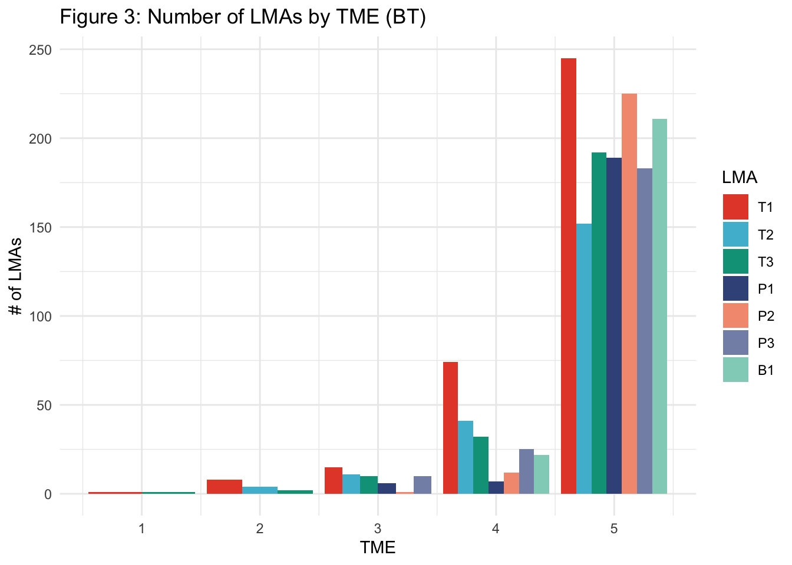
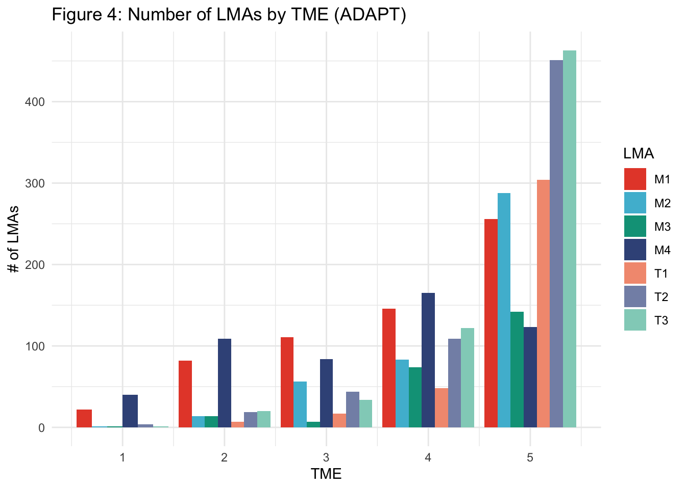
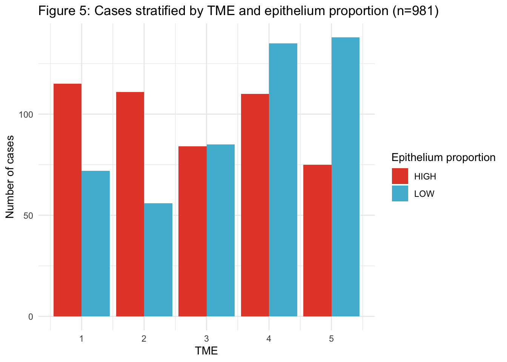
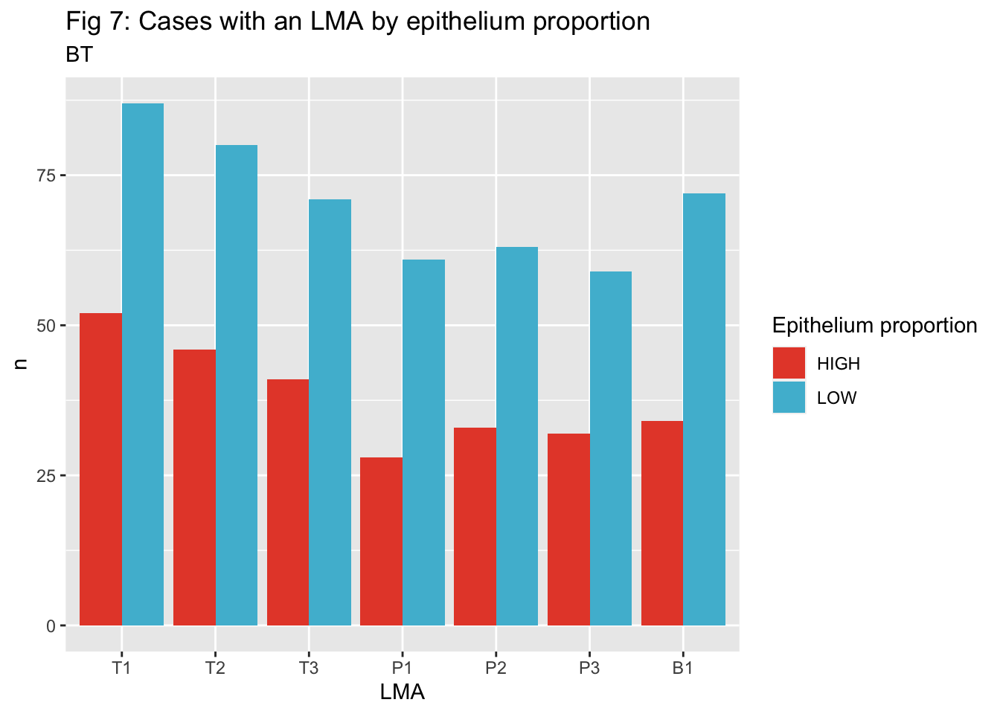
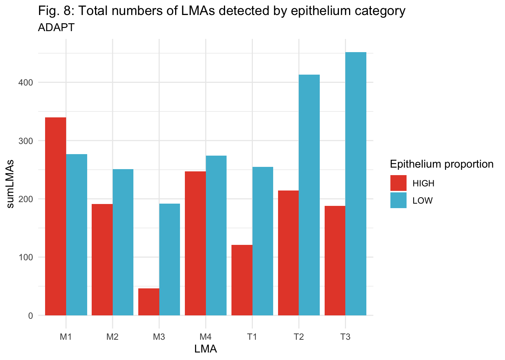
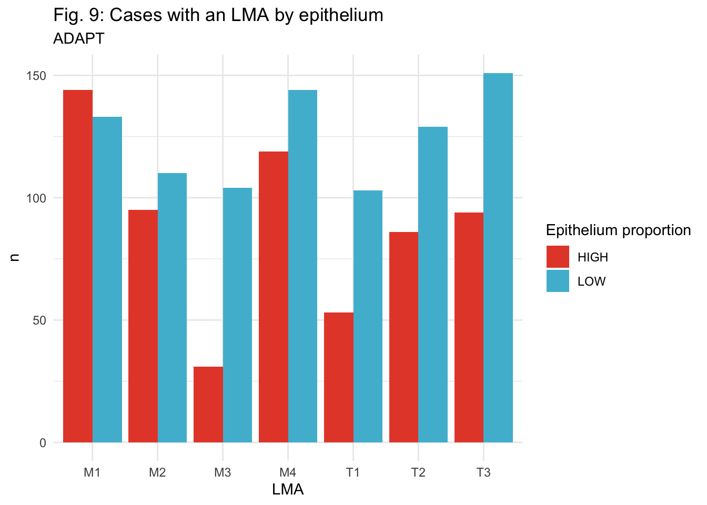
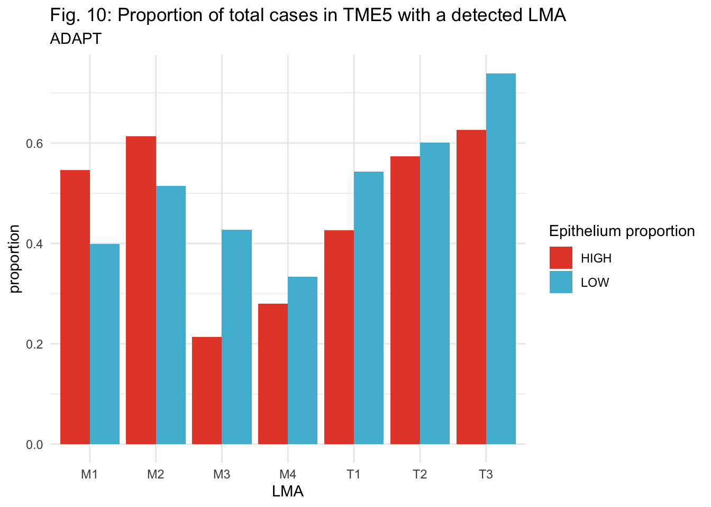
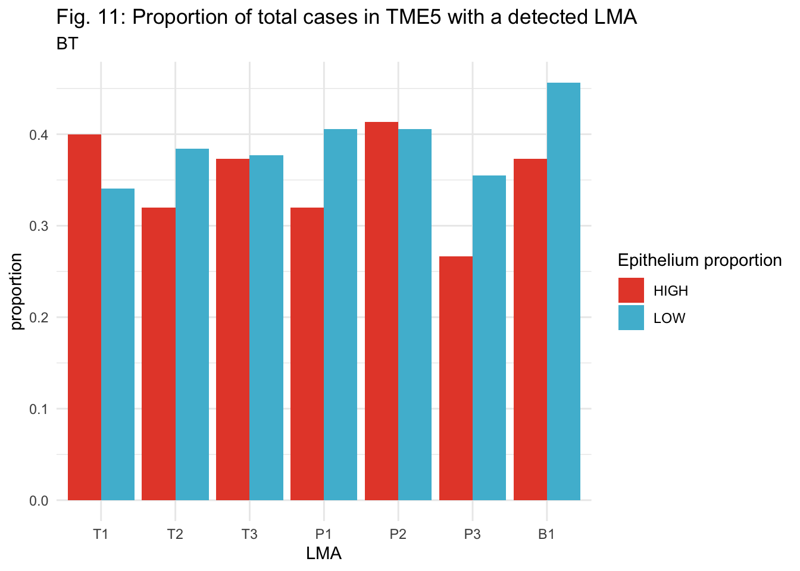
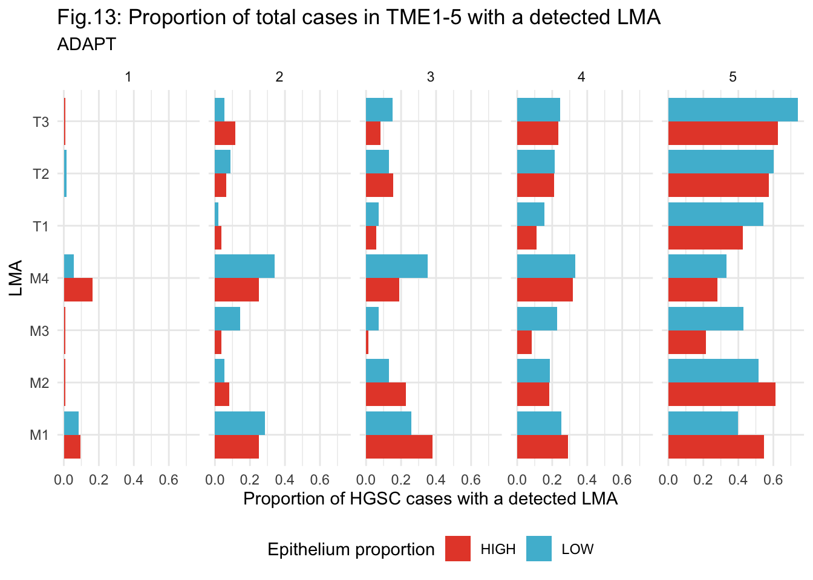

I have identified neighborhood in each image stained with the BT and ADAPT panel from the COEUR TMAs. I need to import this cell level data, filter for the cases that we are using in the heatmap (have survival analysis, samples are pre-treatment).
Renaming LMAs for easier interpretation - LMA1 is mostly B cells (B1), LMA7-2-6 have similar compositions (mostly T cells), with decreasing CD8+ and increasing CD8- proportions (T1,T2,T3). LMA5-4-3 are mostly plasma cell dominated with increasing proportions of plasma cells (P1,P2,P3).
How many communities of each type do I find in cases of each TME?
BT Panel:
Code
btLMAs <-left_join(btLMAs, countsbt %>%select(Image, pNum)) %>%left_join(., tme %>%select(pNum, TME))btLMAs %>%group_by(TME, LMA) %>%count() %>%ggplot(aes(x=TME, y=n, fill=LMA))+geom_col(position =position_dodge())+scale_fill_npg()+ggtitle("Figure 3: Number of LMAs by TME (BT)")+theme_minimal()+xlab("TME")+ylab("# of LMAs")

ADAPT panel:
Code
adaptLMAs <-left_join(adaptLMAs, countsadapt %>%select(Image, pNum)) %>%left_join(., tme %>%select(pNum, TME))adaptLMAs %>%group_by(TME, LMA) %>%count() %>%ggplot(aes(x=TME, y=n, fill=LMA))+geom_col(position =position_dodge())+scale_fill_npg()+ggtitle("Figure 4: Number of LMAs by TME (ADAPT)")+theme_minimal()+xlab("TME")+ylab("# of LMAs")

Stroma percentage and LMAs
How are percentage of stroma in an image and the # of LMAs of each type detected correlated? I hypothesize that all types of LMAs should be positively correlated with higher stroma since immune cell density is higher in stroma.
Epithelium proportion negatively correlated with all LMA subtypes, except for M1 (PDL1+ macs).
Occurence of each LMA type in high versus low epithelium cases (split at the median). There are 981 total cases - half low, half high epithelium. Out of the 981 cases, 630 have an LMA detected in the adaptive panel, while only 346 have an LMA detected in the BT panel.
First - how are high and low epithelium cases distributed across the 5 TME?
Code
stroma_information <- stroma_information %>%mutate(EPI_BINARY =case_when(avg_epi_prop >=median(avg_epi_prop) ~"HIGH",TRUE~"LOW"))left_join(tme, stroma_information) %>%ggplot(aes(x=TME, fill=EPI_BINARY))+geom_bar(position=position_dodge())+ylab("Number of cases")+theme_minimal()+ggtitle("Figure 5: Cases stratified by TME and epithelium proportion (n=981)")+scale_fill_manual(name="Epithelium proportion", values = (pal_npg()(2)))

Most TME5 cases (hot) are high epithelium
Now, out of all the LMAs detected, how many are in high versus low epithelium cases? I am visualizing this two ways: 1. The total number of LMAs of each type detected in high and low epi cases. 2. Only considering whether that LMA type was detected in a case at all (presence/absence).
bt_stroma_binary <- btLMAs %>%group_by(pNum, LMA) %>%summarise(numberOfLMAs =n()) %>%left_join(., tme) %>%left_join(., stroma_information) %>%group_by(EPI_BINARY, LMA) %>%count()bt_stroma_binary %>%ggplot(aes(x=LMA, y=n, fill=EPI_BINARY))+geom_col(position=position_dodge())+scale_fill_npg(name="Epithelium proportion")+ggtitle("Fig 7: Cases with an LMA by epithelium proportion", subtitle="BT")

Regardless of how I analyze the data (total number of LMAs versus presence or absence), most occurences of each LMA type are in high stroma cases.
Now looking at the adaptive (macrophage) panel:
Code
adapt_stroma <- adaptLMAs %>%group_by(pNum, LMA) %>%summarise(numberOfLMAs =n()) %>%left_join(., tme) %>%left_join(., stroma_information) %>%group_by(EPI_BINARY, LMA) %>%summarise(sumLMAs =sum(numberOfLMAs))adapt_stroma %>%ggplot(aes(x=LMA, y=sumLMAs, fill=EPI_BINARY)) +geom_col(position=position_dodge())+scale_fill_npg(name="Epithelium proportion")+theme_minimal()+ggtitle("Fig. 8: Total numbers of LMAs detected by epithelium category", subtitle="ADAPT")

Code
adapt_stroma_binary <- adaptLMAs %>%group_by(pNum, LMA) %>%summarise(numberOfLMAs =n()) %>%left_join(., tme) %>%left_join(., stroma_information) %>%group_by(EPI_BINARY, LMA) %>%count()adapt_stroma_binary %>%ggplot(aes(x=LMA, y=n, fill=EPI_BINARY)) +geom_col(position=position_dodge())+scale_fill_npg(name="Epithelium proportion")+theme_minimal()+ggtitle("Fig. 9: Cases with an LMA by epithelium", subtitle="ADAPT")

Across the board, the ratio of LMAs in high versus low stroma cases favours high stroma - except for M1, where most of the neighborhoods detected are in low stroma cases (more PDL1 macrophage neighborhoods in low stroma cases).
Stroma percentage and LMAs - TME5 specific
Maybe there are trends between LMA and stroma proportion that are being masked by the differences in immune infiltration across the 981 cases. If I restrict my analysis to just TME5, are there differences in the occurence of each LMA type between high and low stroma HOT cases?
Code
adapt_tme5_stroma <- adaptLMAs %>%group_by(pNum, LMA) %>%summarise(numberOfLMAs =n()) %>%left_join(., tme) %>%left_join(., stroma_information) %>%group_by(TME, EPI_BINARY, LMA) %>%count() %>%filter(TME ==5)tme_str_tally <-left_join(tme, stroma_information) %>%group_by(TME, EPI_BINARY) %>%summarise(n_cases =n())adapt_tme5_stroma <- adapt_tme5_stroma %>%left_join(tme_str_tally)adapt_tme5_stroma <- adapt_tme5_stroma %>%mutate(proportion = n/n_cases)adapt_tme5_stroma %>%ggplot(aes(x=LMA, y=proportion, fill=EPI_BINARY))+geom_col(position=position_dodge())+scale_fill_npg(name="Epithelium proportion")+theme_minimal()+ggtitle("Fig. 10: Proportion of total cases in TME5 with a detected LMA", subtitle="ADAPT")

A higher proportion of high epithelium cases have M1 and M2 LMAs (in TME5), and less M3 LMAs.
Code
bt_tme5_stroma <- btLMAs %>%group_by(pNum, LMA) %>%summarise(numberOfLMAs =n()) %>%left_join(., tme) %>%left_join(., stroma_information) %>%group_by(TME, EPI_BINARY, LMA) %>%count() %>%filter(TME ==5)bt_tme5_stroma <- bt_tme5_stroma %>%left_join(tme_str_tally)bt_tme5_stroma <- bt_tme5_stroma %>%mutate(proportion = n/n_cases)bt_tme5_stroma %>%ggplot(aes(x=LMA, y=proportion, fill=EPI_BINARY))+geom_col(position=position_dodge())+scale_fill_npg(name="Epithelium proportion")+theme_minimal()+ggtitle("Fig. 11: Proportion of total cases in TME5 with a detected LMA", subtitle="BT")

Expanding the last two plots to look at ALL 5 TMEs.
Code
adapt_tme_stroma <- adaptLMAs %>%group_by(pNum, LMA) %>%summarise(numberOfLMAs =n()) %>%left_join(., tme) %>%left_join(., stroma_information) %>%group_by(TME, EPI_BINARY, LMA) %>%count()adapt_tme_stroma <- adapt_tme_stroma %>%left_join(tme_str_tally)adapt_tme_stroma <- adapt_tme_stroma %>%mutate(proportion = n/n_cases)adapt_tme_stroma %>%ggplot(aes(x=LMA, y=proportion, fill=EPI_BINARY))+geom_col(position=position_dodge())+scale_fill_npg(name="Epithelium proportion")+theme_minimal()+ylab("Proportion of HGSC cases with a detected LMA")+facet_wrap(~TME, ncol=5)+coord_flip()+theme(legend.position ="bottom")+ggtitle("Fig.13: Proportion of total cases in TME1-5 with a detected LMA", subtitle="ADAPT")

Code
bt_tme_stroma <- btLMAs %>%group_by(pNum, LMA) %>%summarise(numberOfLMAs =n()) %>%left_join(., tme) %>%left_join(., stroma_information) %>%group_by(TME, EPI_BINARY, LMA) %>%count()bt_tme_stroma <- bt_tme_stroma %>%left_join(tme_str_tally)bt_tme_stroma <- bt_tme_stroma %>%mutate(proportion = n/n_cases)bt_tme_stroma %>%ggplot(aes(x=LMA, y=proportion, fill=EPI_BINARY))+geom_col(position=position_dodge())+scale_fill_npg(name="Epithelium proportion")+theme_minimal()+ylab("Proportion of HGSC cases with a detected LMA")+facet_wrap(~TME, ncol=5)+coord_flip()+theme(legend.position ="bottom")+ggtitle("Fig.14: Proportion of total cases in TME1-5 with a detected LMA", subtitle="ADAPT")